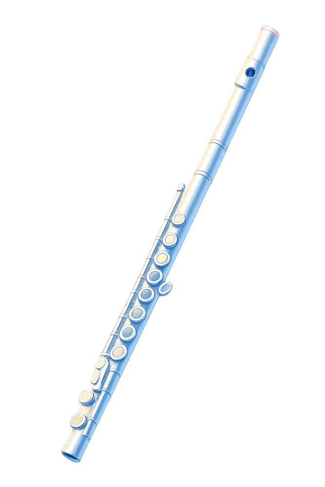

夜幕低垂，說書人化身嚮導，以音符翻開神祕物語。邀請您在星群下，聆聽關於夢與記憶的幻影奇談。
Selections from Disney’s Moana - arr. Jay Bocook
撰文：陳政賢
迪士尼動畫電影《海洋奇緣》 (Moana) 於 2016 年上映，以南太平洋玻里尼西亞文化為創作背景，融合神話傳說、航海文化與家族情感，描繪少女莫娜 (Moana) 為拯救族人、追尋自我使命而踏上航海旅程的故事。

〈Where You Are〉為組曲的開端，以輕快且富有熱帶島嶼律動的節奏，描繪了莫娜居住的莫圖努伊島 (Motunui) 繁榮、安穩的部落生活，各聲部以對位與疊加的方式，展現族人們安居樂業的歡樂氛圍。
〈How Far I’ll Go〉為電影榮獲奧斯卡最佳原創歌曲提名的核心主題曲。起初由木管的獨奏或弱奏輕柔傾訴，展現莫娜面對海洋召喚時的內心掙扎與渴望；隨後音樂層層堆疊，銅管聲部大氣地推向高潮，釋放出不畏艱難、奔向地平線的堅定決心。
〈You’re Welcome〉為風趣幽默的半神人毛伊 (Maui) 登場曲。音樂轉為帶有爵士與嘻哈律動的輕快切分音節奏，描繪毛伊自信又風趣的性格。其中的歌詞充滿機智與幽默，讓人聽了忍不住想跟著一起搖擺。
〈We Know The Way〉歌詞為托克勞語 (Tokelauan) 與英語交織而成，展現了莫娜祖先作為偉大「航海家」的輝煌歷史。這不僅是一首描寫航行的歌曲，更是一曲頌揚探索、傳承與勇氣的讚歌。
《海洋奇緣》所傳遞的不只是一次冒險旅程，更是一段關於勇氣、責任、自我認同與文化傳承的生命探索。透過這首精采的組曲，觀眾將再次沉浸於電影熟悉而動人的旋律之中，感受音樂跨越語言與文化的力量，並在充滿希望與感動的音樂裡，與主角一同揚帆啟航，迎向屬於自己的遼闊海洋。